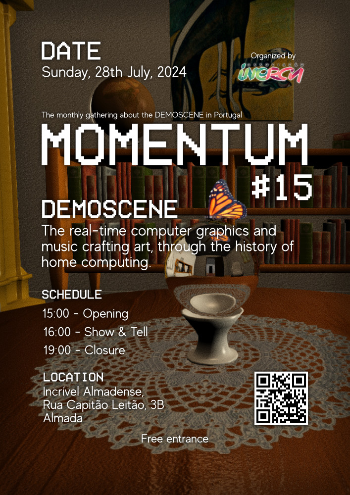

| O que é o Momentum | Encontro mensal da demoscene Portuguesa, com o objectivo de produzir demos. Para a malta antiga é uma boa oportunidade de voltar ao activo, para a malta nova dá a conhecer o processo e promove a interajuda. Esperamos com esta iniciativa dinamizar a demoscene Portuguesa para passarmos a ter maior participação Portuguesa nas demoparties lá fora e na Inércia Demoparty cá dentro (2-5 Outubro 2020). | |
| O que é a demoscene | Uma comunidade aberta de arte digital focada em criar produções para demonstrar as capacidades dos computadores. Alguns links utéis: Wikipedia demoscene article. Teach yourself demoscene in 14 Days | |
| Próximo Encontro |
 |
|
| Hiperligações relacionadas |
Discord ScenePT Inércia Demoparty |
|